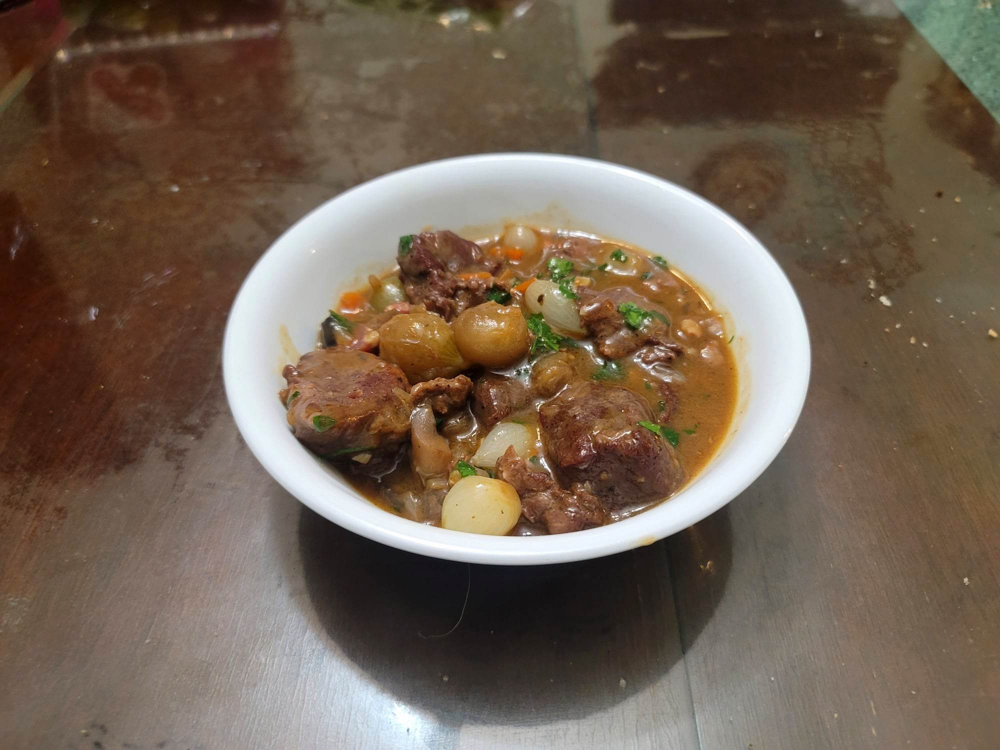

Beef Bourguignon

Ingredients:
- 3 lb Beef chuck or Stewing beef, 2" cubed
- 2 1/4 tsp Kosher salt, less if using cooking wine
- 1/2 tsp Black pepper
- 5 oz Lardons or substitute Pancetta, diced
- 1 Onion, diced
- 1 large Carrot, sliced
- 2 cloves Garlic, minced
- 1 tsp Tomato paste
- 2 tbsp Flour
- 750 ml Red wine
- 1 large Bay leaf
- 1 large Sprig thyme
- 8 oz Pearl onions, peeled
- 8 oz Cremini mushrooms, halved if large
- 1/4 cup Water
- 1 tbsp Olive oil
- 1/8 tsp Sugar
- Parsley, chopped for garnish
Instructions:
- Season the beef with 2 tsp Salt and the black pepper. Let marinate for at least 30 minutes to overnight.
- Preheat an oven to 350 degrees Fahrenheit.
- In a large dutch oven, heat the lardons over medium-low until the fat is rendered and the lardons are crisp, about 10-15 minutes. Then remove the lardons and reserve, leaving the fat in the pot.
- Sear the beef cubes in batches over medium-high for about 10-15 minutes, or until browned on all sides. Reserve the beef onto a plate.
- Add in the onion, carrot, and 1/4 tsp Salt. Sauté until soft, about 10 minutes. Then add in the garlic and tomato paste and sauté another minute.
- Stir in the flour and sauté for 1 minute. Then add in the wine, bay leaf, and the thyme while deglazing the bottom of the pot. Add back the beef and half of the lardons. Cover and transfer to the oven. Let cook for about 90 minutes, or until very tender.
- While that bakes, set a large pan over high heat. Add the pearl onions, mushrooms, water, olive oil, sugar, and a pinch of salt and pepper to taste. Bring to a simmer and cover and reduce to medium heat. Cook for 15 minutes. Then remove cover and bring back to high heat. Cook, tossing frequently, until well browned, 5-7 minutes.
- Once the beef is ready, remove from the oven. Stir in the onions and mushrooms. Top with parsley and serve immediately.